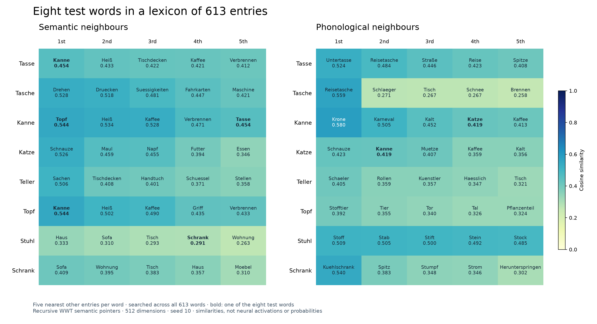

NEF-SPA Lexical Model
Working title: Mental Lexicon Model. This lexical part covers cognitive perception and production within the broader speech-processing model. The current mental lexicon contains 613 word entries, with structured concept and phonological representations. Eight test words remain visible in the interface, while all 613 entries participate in retrieval. The online lab replays recorded neural runs with fixed seeds, including five production conditions and undamaged perception.
Development: The implementation, analyses, figures and documentation were created under the scientific direction of Bernd J. Kröger with assistance from ChatGPT. The scientific foundations are the publications listed below and the existing WWT implementation.
Python source code: GitHub repository: nef-spa-mental-lexicon · Historical eight-word version: v0.1.0. The repository includes the lexicon data, tests and instructions for running the model.
Mental Lexicon Model — Interactive Lab →
Explore the interactive Lexicon Lab in your browser: choose from eight phonological forms, follow the perception pathway to a concept, and start an independent word-production task. Includes slow motion, visible activations and phonological output. The online version presents 48 precomputed Nengo simulations: eight perception runs and five production cases for each of the eight words. It includes a mental-lexicon diagram and selectable ablation examples, with short explanations for Kanne, and requires no local installation. The model vocabulary contains 613 entries; the eight visible words are test inputs, not the full vocabulary. Semantic and phonological neighbour tables search all 613 entries.
1. A 613-entry lexicon with eight test words
The starting point is the three-level organisation of the mental lexicon, as described in particular by Stille et al. (2020). The broader model framework follows Kröger (2023). The 613 word entries were extracted from the existing WWT implementation, excluding task prompts, cue phrases and placeholders as lexical candidates. All required lower-level representations are retained. The following eight words are offered as test inputs: Tasse, Tasche, Kanne, Katze, Teller, Topf, Stuhl and Schrank.
| Level | Representation in the core model |
|---|---|
| Concepts | Structured pointers with predefined semantic relations. |
| Lemmas | Separate lexical entries with independent vectors; grammatical features are not yet included at this stage. |
| Phonological forms | Structured pointers preserving the original hierarchical phonological decomposition. |
Tasse, Kanne and Topf share the conceptual relation to “handle”; Tasse and Teller share “tableware”; Stuhl and Schrank share “furniture”. Examples of phonological overlap include Tasse and Tasche, as well as Kanne and Katze.
The relations are taken from the WWT code and are tailored to its tasks. They do not represent complete everyday knowledge about these words. The expanded graph contains 1,205 concept nodes, including 593 deep-layer nodes, and 1,616 phonology nodes, including 1,003 deep-layer nodes. Deep-layer nodes support the word representations; they are not extra selectable word entries. Thirteen missing phonological mappings in the source lists were restored from existing definitions; the correction record is included in the dataset.
2. Relational structure and recursive vector encoding
A Semantic Pointer Network is initially a structured knowledge representation. It is not equivalent to a neural network. The relational structure specifies which entries share features or components. Vector encoding translates these relations into mathematical representations, which can then be used by a neural network.
The recursive WWT encoding constructs each entry from a random contribution of its own and the representations of its target nodes bound to relation vectors:
⊛ denotes circular convolution. “Recursive” means that every target node is constructed using the same rule. Its internal structure therefore contributes to the parent entry. Leaf nodes without outgoing relations consist of their own random contribution. Each composed vector is normalised.
An example from the original phonological decomposition is:
Tasche has a different higher-level component but also uses P_St_ta below it. This shared structure produces similarity. Likewise, Kanne and Katze share P_St_ka. The new implementation preserves this recursive rule rather than replacing the target representations with separate identity vectors.
The relations are predefined; the base vectors are random. A fixed seed produces the same vectors when the code is run again. Different seeds yield different realisations of the same relational structure. All random contributions are reproducible in the new implementation, although this does not reproduce the historical WWT vectors bit for bit.
3. Similarity matrices before neural simulation
The figure below shows cosine similarities between the normalised vectors using 512 dimensions and seed 10. The diagonal is 1. Values close to zero indicate low vector similarity. Small negative values indicate neither semantic opposites nor neural inhibition.


Stored word vectors, mathematical similarities and ablation. Ablation leaves the stored word vectors and their mathematical similarities completely unchanged in this implementation. It damages their neural processing: activations may become weaker or distorted, and retrieval may fail or produce a different word. The matrices always show the undamaged reference relationships; the lab’s activity bars show what the neural model actually produces under the selected damage settings.
The original eight vectors are exactly preserved in the expanded lexicon, so the eight-word similarity matrices above remain valid. Neighbours reflect the original WWT task associations rather than an independent linguistic similarity norm; for example, the source links Tasche to the visual Automat context.
To assess the effect of randomness, vector construction was repeated with 100 seeds (0–99). These are not neural simulation runs. Across these realisations, the mean phonological similarity of Tasse–Tasche is 0.319 (standard deviation 0.072), and that of Kanne–Katze is 0.329 (0.080). The individual seed shown here was selected before the analysis.
Mathematical checks confirm that the relations are preserved, the recursive rule is implemented correctly, the vectors are normalised and the results are reproducible. An additional analysis with 64 dimensions was performed locally; the neural experiments documented here use 512 dimensions.
4. Recorded perception
Phonological form → Lemma → Concept
The complete phonological word pointer is supplied from 0.15 to 0.75 seconds. A competitive associative memory selects the lemma; a second memory transfers it to the concept level. Acoustic preprocessing is not modelled. All eight test words are correctly retrieved in the undamaged reference, with the output compared against all 613 candidates. For Kanne, the mean concept target activation is 0.965.
Open Lexicon Lab, select “Understand a word” and play any of the eight reference recordings. Perception has no damage presets in this published edition.
5. Word retrieval and production ablation
Concept → Lemma → Phonological form
A complete concept pointer is supplied directly; visual preprocessing is outside this demonstration. All eight test words are correctly retrieved in the undamaged reference. Five recorded production configurations are available for each word.
Why these components? The concept buffer, concept-to-lemma associative memory and lemma buffer were selected following the dysfunction sites studied by Stille et al. (2020). Perception and word comprehension also play a role in the WWT framework, but the emphasis here is on word retrieval for production. These five configurations illustrate the current model; they do not reproduce the paper’s experimental conditions or results.
| Case | Concept / C→L / Lemma (%) | Target activation | Retrieval decision |
|---|---|---|---|
| Reference | 100 / 100 / 100 | 0.973 | Kanne |
| Two buffers reduced | 50 / 100 / 50 | 0.528 | Kanne |
| Memory at 70% | 50 / 70 / 50 | 0.298 | Below threshold |
| Memory at 55% | 50 / 55 / 50 | 0.001 | No retrieval |
| Lemma restored to 75% | 50 / 55 / 75 | 0.325 | Kanne, close to threshold |
The displayed percentages refer to remaining neurons, not activation or probability. Retrieval requires the largest mean output-template dot product to exceed 0.30 and its margin over the next candidate to exceed 0.10, considering all 613 candidates. A visible target representation can therefore fall short of formal retrieval. Case explanations refer specifically to Kanne; other test words may behave differently.
Checking all eight test words
At these fixed seeds, Case 3 fails for six of eight test words; Tasse and Topf are still retrieved. Case 4 retrieves six of eight; Stuhl and Teller remain below the retrieval criteria. Values are mean phonological target dot products over 0.45–0.70 s. These are demonstrations of word-dependent effects, not a general success rate for the 613-entry lexicon.
| Word | Case 3 · 50/55/50 | Case 4 · 50/55/75 |
|---|---|---|
| Tasse | 0.367 · retrieved | 0.621 · retrieved |
| Tasche | -0.001 · no retrieval | 0.474 · retrieved |
| Kanne | 0.001 · no retrieval | 0.325 · retrieved |
| Katze | 0.062 · no retrieval | 0.506 · retrieved |
| Teller | 0.001 · no retrieval | 0.001 · no retrieval |
| Topf | 0.508 · retrieved | 0.720 · retrieved |
| Stuhl | 0.000 · no retrieval | 0.201 · no retrieval |
| Schrank | 0.016 · no retrieval | 0.471 · retrieved |
6. Measurements, implementation and limitations
| Parameter | Setting |
|---|---|
| Software | Python 3.13, Nengo 4.1.0, NengoSPA 2.0.0 |
| Lexicon | 613 entries; eight visible test words |
| Vectors | 512 dimensions; vector seed 10 |
| Neural network | 199,400 LIF neurons per pathway; neural seed 11 |
| Buffers | Three SPA State buffers; 50 neurons per dimension; 25,600 neurons per buffer; no feedback |
| Associative memories | 100 neurons per entry; 61,300 per memory; threshold 0.3; competitive selection in the first memory |
| Ablation | Seed 2026; nested random masks; neurons silenced after decoder construction; no retraining or compensation |
| Timing | 1 ms steps; 1.1 s total; input 0.15–0.75 s; 20 ms readout filter; decision window 0.45–0.70 s |
| Publication | 48 recorded runs: eight undamaged perception and 40 production runs. The public sliders display fixed settings and cannot be moved. |
Similarity is not probability. Neighbour matrices compare normalised templates and show cosine similarities. Activity bars compare the evolving, unnormalised neural state with each unit template. These dot products reflect both direction and strength. Separate markers show associative-memory entry outputs.
Capacity and interpretation. The buffers retain the same size as in the earlier eight-entry model. Associative memories grow linearly with the number of entries, so the total neural population is not held fixed. The enlarged memories also have different ablation masks and neural realisations. Differences from the earlier model cannot be attributed to lexical load alone. These fixed-seed demonstrations do not establish ablation thresholds for a human lexicon or replace a multi-seed robustness study.
The model uses whole-word pointers and predefined mappings. There is no learning rule or grammatical grouping on the lemma level. Full WWT task control and semantic/phonological cue trials are not reproduced here. Acoustic and visual preprocessing, sentence processing and articulation are outside this lexical demonstration.
7. Scientific background
- Kröger BJ (2023). The NEF-SPA Approach as a Framework for Developing a Neurobiologically Inspired Spiking Neural Network Model for Speech Production. Journal of Integrative Neuroscience 22:124. Publication.
- Stille C, Bekolay T, Blouw P, Kröger BJ (2020). Modeling the Mental Lexicon as Part of Long-Term and Working Memory and Simulating Lexical Access in a Naming Task Including Semantic and Phonological Cues. Frontiers in Psychology 11:1594. Publication.
- Kröger BJ, Crawford E, Bekolay T, Eliasmith C (2016). Modeling Interactions between Speech Production and Perception: Speech Error Detection at Semantic and Phonological Levels and the Inner Speech Loop. Frontiers in Computational Neuroscience 10:51. Publication.
- Crawford E, Gingerich M, Eliasmith C (2016). Biologically Plausible, Human-Scale Knowledge Representation. Cognitive Science 40:782–821. Publication.
- Further reading on sentence processing: Kröger BJ, Bekolay T (2025). A neurobiologically inspired model of sentence comprehension. Language, Cognition and Neuroscience 40:616–639. Publication.